zookeeper安装
安装前需要安装好jdk，检测集群时间是否同步，检测防火墙是否关闭，检测主机 ip映射有没有配置
（1）在node1上切换到 /export/server 目录下，上传zookeeper压缩包并解压，设置一个软连接。
切换到server目录下：
1 | cd /export/server |
解压zookeeper压缩包：
1 | tar -zxvf zookeeper.tar.gz -C /export/server/ |
设置软连接：
1 | ln -s /export/server/zookeeper-3.4.6/ zookeeper |
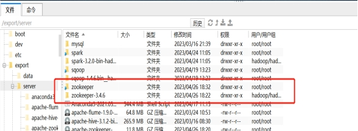
- 修改环境变量（三台都修改）
1 | vi /etc/profile |
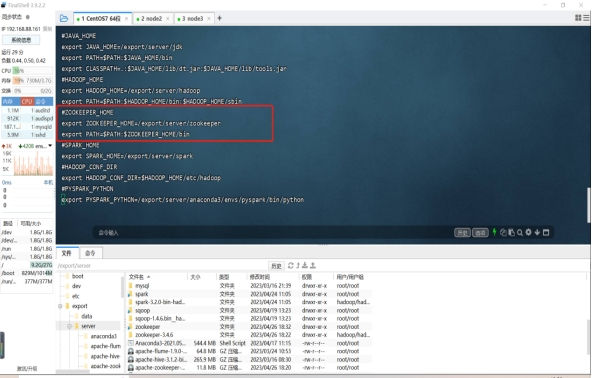
修改zookeeper配置文件
1
2
3cd /export/server/zookeeper/conf/ 切换到conf/目录下
cp zoo_sample.cfg zoo.cfg 复制zoo_sample.cfg文件，文件名为zoo.cfg
创建文件:
1 | mkdir -p /export/data/zookeeper/zkdatas/ |
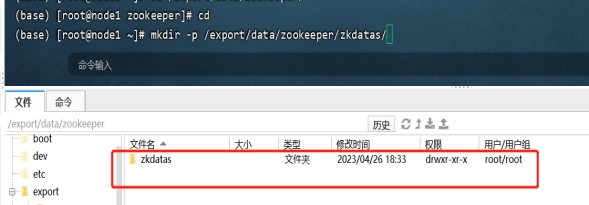
1 | vim zoo.cfg |
填充以下内容：
#Zookeeper的数据存放目录
1 | dataDir = /export/data/zookeeper/zkdatas/ |
# 保留多少个快照
1 | autopurge.snapRetainCount = 3 |
# 日志多少小时清理一次
1 | autopurge.purgeInterval = 1 |
# 集群中服务器地址
1 | server.1 =node1:2888:3888 |
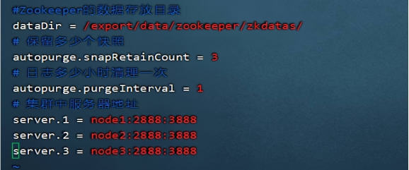
- 添加myid配置
在node1主机的/export/server/zookeeper/zkdatas/这个路径下创建一个文件，文件名为myid ,文件内容为1
1 | echo 1 > /export/data/zookeeper/zkdatas/myid |
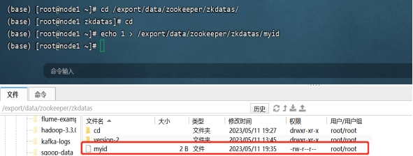
- 安装包分发并修改myid的值
在node1主机上，将安装包分发到其他机器
第一台机器上面执行以下两个命令
1 | cd /export/server/ |
建立软连接（node2 node3）
1 | ln -s zookeeper-3.4.6/ zookeeper |
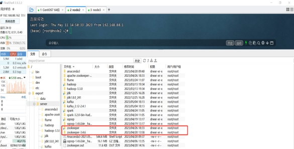
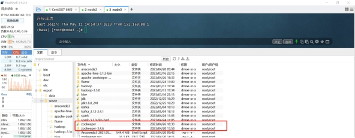
1 | echo 2 > /export/data/zookeeper/zkdatas/myid （node2上执行） |
1 | echo 3 > /export/data/zookeeper/zkdatas/myid （node3上执行） |
三台机器启动zookeeper服务
1
（1）/export/server/zookeeper/bin/zkServer.sh start
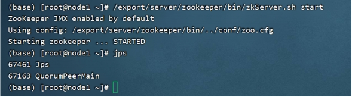
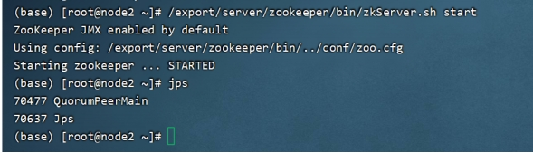
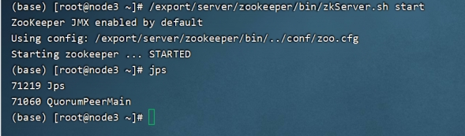
1 | （2）/export/server/zookeeper/bin/zkServer.sh status 三台主机分别查看启动状态 |
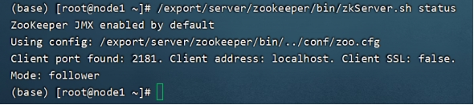
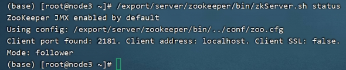
- 编写一个脚本批量启动node1，2，3的zookeeper
（1）创建shell目录
1 | mkdir /export/shell |
（2）再此目录下建立一个zkall.sh文件
1 | vim zkall.sh |
添加以下内容：
1 | #!/bin/bash |
（3）配置zk脚本环境变量、zookeeper的环境变量
1 | vi /etc/profile |
#ZOOKEEPER_SHELL_HOME
1 | export ZKS_HOME=/export/shell/ |
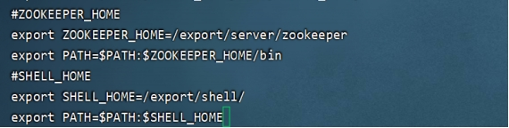
让环境变量生效
1 | source /etc/profile |
（4） 设置环境路径
1 | vim .bashrc |
（5）增加可执行权限
1 | chmod +x zkall.sh |
（6）启动测试
1 | zkall.sh start |
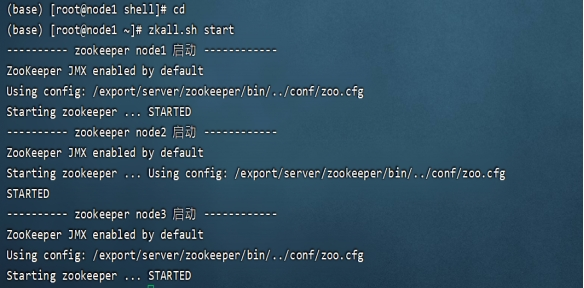
查看状态
1 | zkall.sh status |
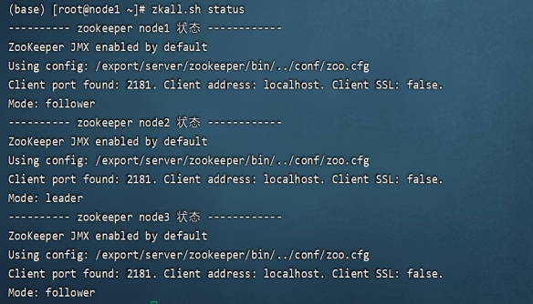
（7）zookeeper服务器常用命令
启动 ZooKeeper 服务:
1 | ./zkServer.sh start |
查看 ZooKeeper 服务状态:
1 | ./zkServer.sh status |
停止 ZooKeeper 服务:
1 | ./zkServer.sh stop |
重启 ZooKeeper 服务:
1 | ./zkServer.sh restart |
- Zookeerper命令操作
（1）连接ZooKeeper服务端
1 | ./zkCli.sh -server node1:2181 |
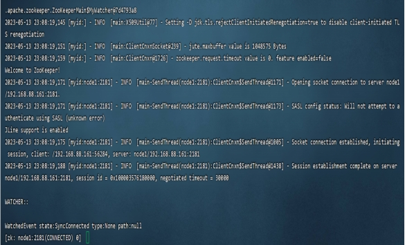